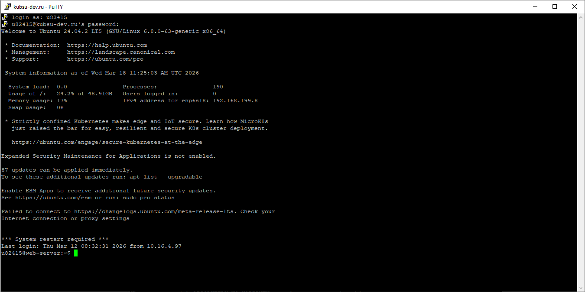
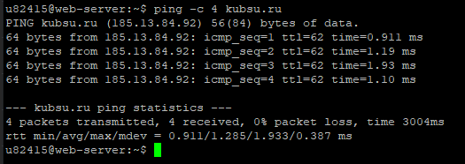
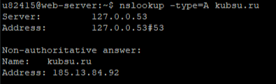
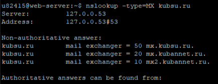
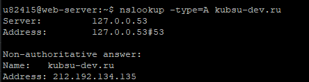
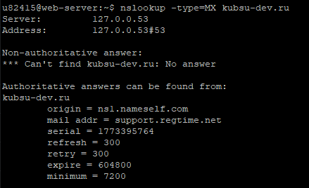
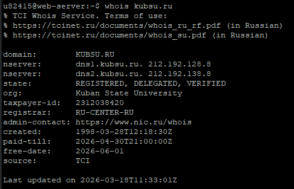
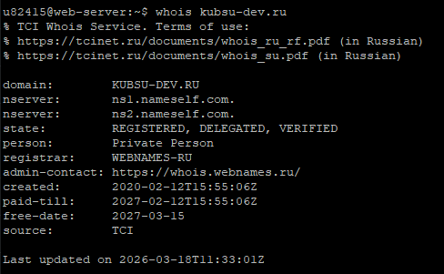
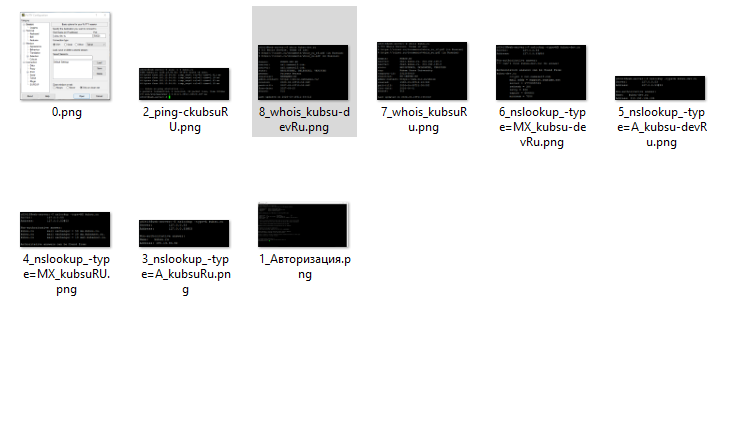

Лабораторная работа №1
Пункт 1. Подключение к серверу с помощью PuTTY
Что происходит: На скриншоте изображено окно настройки программы PuTTY для подключения к учебному серверу по протоколу SSH (Secure Shell).
- Host Name (или IP-адрес):
kubsu-dev.ru– доменное имя сервера. - Port:
58528– нестандартный порт, выданный преподавателем. - Connection type: выбран SSH – шифрованное соединение.
После нажатия Open PuTTY установит соединение и запросит логин (u82415) и пароль.

Скриншот 1.1: Настройки PuTTY (0.png)
Результат: Успешный вход в систему. Приглашение командной строки u82415@web-server:~$ подтверждает, что пользователь готов к работе.

Скриншот 1.2: Успешная авторизация (1_Авторизация.png)
Пункт 2. Определение IP-адреса веб-сервера kubsu.ru
ping -c 4 kubsu.ru
Что делает: Утилита ping отправляет ICMP-запросы и измеряет время ответа.
Результат: IP-адрес сервера 185.13.84.92. Все 4 пакета доставлены, потерь нет. Среднее время ответа – 1.285 мс.

Скриншот 2: ping kubsu.ru (2_ping-ckubsuRU.png)
Пункт 3.1. A-запись домена kubsu.ru
nslookup -type=A kubsu.ru
Что делает: Запрос A-записи (IPv4-адрес) для домена.
Результат: kubsu.ru → 185.13.84.92.

Скриншот 3.1: nslookup A kubsu.ru (3_nslookup_-type=A_kubsuRu.png)
Пункт 3.2. MX-запись домена kubsu.ru
nslookup -type=MX kubsu.ru
Что делает: Запрос почтовых серверов (MX-записей) для домена.
Результат: Получены три почтовых сервера с приоритетами:
- приоритет 10: mx2.kubannet.ru
- приоритет 20: mx.kubannet.ru
- приоритет 50: mx.kubsu.ru

Скриншот 3.2: nslookup MX kubsu.ru (4_nslookup_-type=MX_kubsuRU.png)
Пункт 3.3. A-запись домена kubsu-dev.ru
nslookup -type=A kubsu-dev.ru
Что делает: Запрос A-записи для kubsu-dev.ru.
Результат: IP-адрес 212.192.134.135

Скриншот 3.3: nslookup A kubsu-dev.ru (5_nslookup_-type=A_kubsu-devRu.png)
Пункт 3.4. MX-запись домена kubsu-dev.ru
nslookup -type=MX kubsu-dev.ru
Что делает: Запрос MX-записей для kubsu-dev.ru.
Результат: Для домена нет MX-записей (ответ No answer). В авторитативном ответе указаны DNS-серверы:
- origin: nsl.nameself.com
- mail addr: support.regtime.net

Скриншот 3.4: nslookup MX kubsu-dev.ru (6_nslookup_-type=MX_kubsu-devRu.png)
Пункт 4.1. Дата регистрации домена kubsu.ru
whois kubsu.ru
Что делает: Запрос регистрационных данных домена.
Результат: Домен зарегистрирован 28 марта 1998 года (created: 1998-03-28T12:18:30Z). Срок действия оплачен до 30 апреля 2026 года.

Скриншот 4.1: whois kubsu.ru (7_whois_kubsuRu.png)
Пункт 4.2. Дата регистрации домена kubsu-dev.ru
whois kubsu-dev.ru
Что делает: Запрос регистрационных данных для kubsu-dev.ru.
Результат: Домен зарегистрирован 12 февраля 2020 года (created: 2020-02-12T15:55:06Z). Срок действия – до 12 февраля 2027 года.

Скриншот 4.2: whois kubsu-dev.ru (8_whois_kubsu-devRu.png)
Пункт 5. Создание веб-страницы и размещение в git-репозитории
5.1. Подготовка локального репозитория
На локальном компьютере создана папка 01weblaba1, в которую помещены все скриншоты и файл index.html.

Скриншот 5.1: Содержимое папки lab1 (9_скрин_папки.png)
5.2. Создание файла index.html
Создан файл index.html с базовой структурой HTML, содержащий ссылки на все скриншоты и пояснения.
5.3. Генерация SSH-ключа для подключения к GitHub
ssh-keygen -t rsa -b 4096 -C "freddek56@gmail.com"
Для безопасной работы с GitHub по SSH был сгенерирован новый ключ. На все вопросы были оставлены значения по умолчанию (нажат Enter).

Скриншот 5.3: Генерация SSH-ключа (11_Генерация ssh- ключа.png)

Скриншот 5.4: Содержимое публичного ключа (12_публичный ключ.png)

Скриншот 5.5: Добавление ключа в настройках GitHub (13_Ключ в git hub.png)
5.6. Клонирование репозитория на учебный сервер
git clone git@github.com:s0195838/ApparatnoProgrammieSredstvawEB.git
После настройки SSH-ключа, репозиторий был успешно склонирован на сервер.

Скриншот 5.6: Клонирование репозитория (10_клонирование репозитория.png)
5.7. Перенос в каталог www
mkdir -p ~/www/hwl
cp -r ~/ApparatoProgrammeSredstvaWEB/* ~/www/hwl/
ls ~/www/hwl/Создан каталог ~/www/hwl (доступный через веб), в него скопированы файлы из клонированного репозитория. Команда ls подтверждает наличие файлов.

Скриншот 5.7.1: Создание каталога (15_создание каталога.png)

Скриншот 5.7.2: Копирование и проверка (14_перенос каталогаWWW.png)
5.8. Проверка доступа к странице
В браузере открыт адрес http://u82415.kubsu-dev.ru/hwl/. Страница загружается, все скриншоты отображаются корректно.
Пункт 6. Копирование файлов через SFTP (FileZilla)
Что делает: FileZilla используется для подключения к серверу kubsu-dev.ru (порт 58528, логин u82415) по протоколу SFTP для передачи файлов отчета.
Результат: Все файлы успешно скопированы с локального компьютера на сервер в каталог ~/www/hwl/.

Скриншот 6.1: Процесс подключения к серверу (17_подключение по FZ.png)

Скриншот 6.2: Интерфейс FileZilla (16_Копирование через FZ.png)

Скриншот 6.3: Успешная передача файлов (18_Перекидка файлов через FZ.png)
Пункт 7. Фиксация добавленных скриншотов в Git
git commit -m "Добавлены скрины через FZ"
Что делает: После добавления новых скриншотов (включая снимки экрана FileZilla) в локальный репозиторий, изменения были зафиксированы с помощью команды git commit.
Результат: Создан новый коммит с хешем 3b268f2. В коммит вошли 26 новых или измененных файлов, включая все скриншоты, файл index.html и ключи SSH.

Скриншот 7: Результат выполнения git commit (19_всё работает.png)